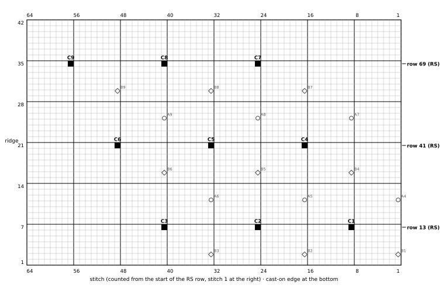
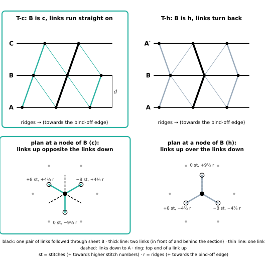
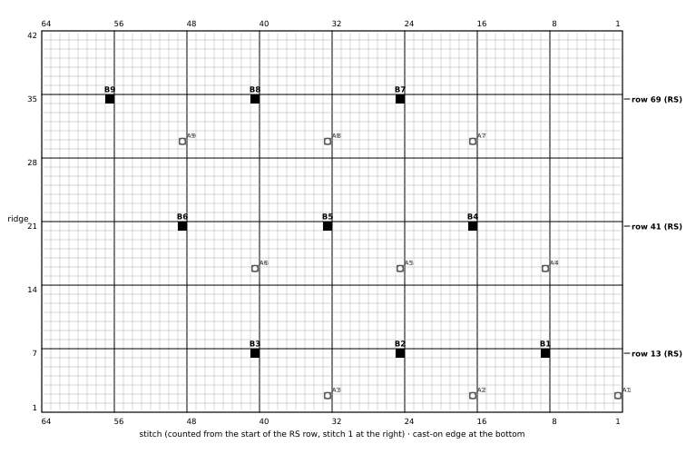
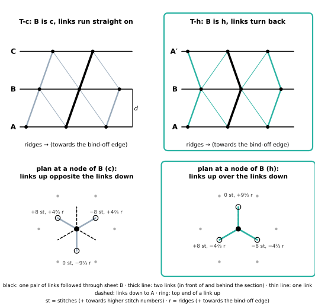

Two test pieces, T-c and T-h: three knitted sheets and 42 knitted links that stand in space as the HexOct structure
DICTO proposed the Knitted HexOct: a multi-layer knitted fabric whose sheets are close-packed layers and whose links join each node to the 3 nodes of the next sheet that its ball touches, so that c and h are carried by the links. These patterns make the two smallest pieces that show c against h. Each piece is the structure itself in three dimensions: the sheets are layers A, B, C (or A, B, A′), the knitted links are the bonds between them, and the cells closed off by sheets and links are tetrahedra and octahedra, the pieces of the HexOct c-tile or h-tile. There is no colourwork: the charts only tell you where the node stitches are.
Knit a garter-stitch swatch of 30 sts × 40 ridges on 3.5 mm needles (one ridge = 2 rows). Lay it flat without stretching and measure S = stitches per 10 cm and R = ridges per 10 cm.
| R / S | M (N = 16) | row spacing error |
|---|---|---|
| 0.85 | 12 | +1.9 % |
| 0.90 | 12 | -3.8 % |
| 0.95 | 13 | -1.2 % |
| 1.00 | 14 | +1.0 % |
| 1.05 | 15 | +3.1 % |
| 1.10 | 15 | -1.6 % |
| 1.15 | 16 | +0.4 % |
For a more exact triangle, larger N: N = 30, M = 26 gives the row spacing to 0.07 %, but a ≈ 14 cm (spec §4).
The patterns below are written for N = 16, M = 14 (cast on 64, 42 ridges, node rows 13, 41, 69). Sizes are given at the reference gauge 22 sts and 22 ridges per 10 cm: a = 7.27 cm, d = 5.94 cm. With your own S, scale every size by 22/S. If your M differs, recompute the node rows from the formula; the node stitches depend on N only.
| K, Kn | knit; knit n stitches |
| NK [X] | node knit: knit the next stitch with the yarn and a 15 cm contrast thread held together; leave both thread ends hanging. This stitch is node X. |
| RS, WS | right side, wrong side (mark the RS: garter looks the same on both) |
| st(s); r | stitch(es); ridge (2 rows of garter) |
| DPN | double-pointed needle |
| i-cord | 3 sts on a DPN: knit 3, slide the sts to the other end, pull the yarn across the back, repeat |
| a, d, ℓ, t | node spacing; sheet spacing √(2/3) a; free cord length a − 1.22 t; sheet thickness |
| A1…A9, B1…B9, C1…C9, A′1…A′9 | nodes: sheet letter, then 1 + i + 3j (node row 1: 1–3, row 2: 4–6, row 3: 7–9) |
| gap 1, gap 2 | the space between sheets 1 and 2, and between sheets 2 and 3 |
A three-dimensional HexOct structure, not a flat fabric: three knitted sheets held one above another, joined by 42 knitted cords (links). Each sheet is one close-packed layer: its 9 marked node stitches lie on a triangular lattice of spacing a. Each node is linked to the 3 nodes of the next sheet that its ball would touch. When the sheets are pulled apart until every cord is taut, the cords stand at 54.7° to the sheets, the sheets lie d = √(2/3) a apart, and sheets and cords close off tetrahedra and octahedra in space. The middle sheet B is c: each cord up from a B node runs on in a straight line from a cord coming down into it (stacking A-B-C). The cells around B are the pieces of the HexOct c-tile (#75, at λ = −1/8). The chart of each sheet only places the node stitches; there is no colourwork.
| at 22 sts and 22 ridges per 10 cm (N = 16, M = 14) | |
|---|---|
| node spacing a (= link length, node to node) | 7.27 cm |
| sheet spacing d = √(2/3) a (mid-plane to mid-plane) | 5.94 cm |
| each sheet (64 sts × 42 ridges) | 29.1 × 19.1 cm |
| node patch in each sheet (A1 to A9) | 21.8 × 12.6 cm |
| height of the piece (2d + one sheet thickness 0.35 cm) | 12.2 cm |
| top sheet C over sheet A: node C1 lies +16 st and +9⅓ ridges from A1 | 8.4 cm sideways |
| cells closed by sheets and cords | 16 tetrahedra, 8 octahedra |
How it stands. Each sheet is laced into a flat rigid frame. Hang the piece by the top frame and the lower frames settle where all cords are taut: that is the only place where the sheets are farthest apart, the exact HexOct place (self-centring, spec §1). Then four posts of length d at the frame corners let it stand on a table. Sheet C ends up moved on sideways again, the same way as B over A.
Knit all three sheets the same way, in garter stitch, with the 9 node stitches at the same places; only the labels differ. Do not stretch or block the sheets. Where a sheet lies in the finished piece (A, B or C) is not knitted in: the cords set it. Each chart shows the sheet from the RS, cast-on edge at the bottom, one square = 1 stitch × 1 ridge; black squares are the node stitches (worked NK). Outlined marks show where the nodes of the other two sheets lie above or below this sheet in the finished piece (○ sheet A, ◇ sheet B, □ sheet C), at the exact offsets: B is +8 st and +4⅔ ridges from A; C is +16 st and +9⅓ ridges from A.
| node | row | ridge | stitch | links |
|---|---|---|---|---|
| A1 | 13 | 7 | 9 | 1 |
| A2 | 13 | 7 | 25 | 2 |
| A3 | 13 | 7 | 41 | 2 |
| A4 | 41 | 21 | 17 | 2 |
| A5 | 41 | 21 | 33 | 3 |
| A6 | 41 | 21 | 49 | 3 |
| A7 | 69 | 35 | 25 | 2 |
| A8 | 69 | 35 | 41 | 3 |
| A9 | 69 | 35 | 57 | 3 |
| node | row | ridge | stitch | links |
|---|---|---|---|---|
| B1 | 13 | 7 | 9 | 4 |
| B2 | 13 | 7 | 25 | 5 |
| B3 | 13 | 7 | 41 | 4 |
| B4 | 41 | 21 | 17 | 5 |
| B5 | 41 | 21 | 33 | 6 |
| B6 | 41 | 21 | 49 | 5 |
| B7 | 69 | 35 | 25 | 4 |
| B8 | 69 | 35 | 41 | 5 |
| B9 | 69 | 35 | 57 | 4 |
| node | row | ridge | stitch | links |
|---|---|---|---|---|
| C1 | 13 | 7 | 9 | 3 |
| C2 | 13 | 7 | 25 | 3 |
| C3 | 13 | 7 | 41 | 2 |
| C4 | 41 | 21 | 17 | 3 |
| C5 | 41 | 21 | 33 | 3 |
| C6 | 41 | 21 | 49 | 2 |
| C7 | 69 | 35 | 25 | 2 |
| C8 | 69 | 35 | 41 | 2 |
| C9 | 69 | 35 | 57 | 1 |

Cord length. Every link is a 3-stitch i-cord of the same free length ℓ = a − 1.22 t, measured between the two sheet faces (t = sheet thickness; measure it on a sheet with a ruler under light pressure). At the reference gauge a = 72.7 mm: ℓ = 69.1 mm for t = 3.0 mm, 68.4 mm for 3.5 mm, 67.8 mm for 4.0 mm. Cut a card strip of length ℓ. Knit the first cord to the strip under a light, even pull and count its rows; knit every other cord to the same row count. Equal counts make equal links.
To work one cord (from node X of the lower sheet). Lay the lower sheet RS up, cast-on edge towards you. With a 3.0 mm DPN, on the RS, pick up and knit 3 sts: the node stitch X and the stitch on each side of it in the same ridge. *Slide the sts to the other end of the DPN, pull the yarn across the back, K3; repeat from * to the row count. Do not bind off: put the 3 live sts on a safety pin and tag it with the link number and target node Y.
| Gap 1: sheet A → sheet B (forward step) | |||
|---|---|---|---|
| link | from | to | top end lies |
| 1 | A1 | B1 | +8 st, +4⅔ r |
| 2 | A2 | B1 | −8 st, +4⅔ r |
| 3 | A2 | B2 | +8 st, +4⅔ r |
| 4 | A3 | B2 | −8 st, +4⅔ r |
| 5 | A3 | B3 | +8 st, +4⅔ r |
| 6 | A4 | B1 | 0 st, −9⅓ r |
| 7 | A4 | B4 | +8 st, +4⅔ r |
| 8 | A5 | B2 | 0 st, −9⅓ r |
| 9 | A5 | B4 | −8 st, +4⅔ r |
| 10 | A5 | B5 | +8 st, +4⅔ r |
| 11 | A6 | B3 | 0 st, −9⅓ r |
| 12 | A6 | B5 | −8 st, +4⅔ r |
| 13 | A6 | B6 | +8 st, +4⅔ r |
| 14 | A7 | B4 | 0 st, −9⅓ r |
| 15 | A7 | B7 | +8 st, +4⅔ r |
| 16 | A8 | B5 | 0 st, −9⅓ r |
| 17 | A8 | B7 | −8 st, +4⅔ r |
| 18 | A8 | B8 | +8 st, +4⅔ r |
| 19 | A9 | B6 | 0 st, −9⅓ r |
| 20 | A9 | B8 | −8 st, +4⅔ r |
| 21 | A9 | B9 | +8 st, +4⅔ r |
| Gap 2: sheet B → sheet C (forward step) | |||
|---|---|---|---|
| link | from | to | top end lies |
| 22 | B1 | C1 | +8 st, +4⅔ r |
| 23 | B2 | C1 | −8 st, +4⅔ r |
| 24 | B2 | C2 | +8 st, +4⅔ r |
| 25 | B3 | C2 | −8 st, +4⅔ r |
| 26 | B3 | C3 | +8 st, +4⅔ r |
| 27 | B4 | C1 | 0 st, −9⅓ r |
| 28 | B4 | C4 | +8 st, +4⅔ r |
| 29 | B5 | C2 | 0 st, −9⅓ r |
| 30 | B5 | C4 | −8 st, +4⅔ r |
| 31 | B5 | C5 | +8 st, +4⅔ r |
| 32 | B6 | C3 | 0 st, −9⅓ r |
| 33 | B6 | C5 | −8 st, +4⅔ r |
| 34 | B6 | C6 | +8 st, +4⅔ r |
| 35 | B7 | C4 | 0 st, −9⅓ r |
| 36 | B7 | C7 | +8 st, +4⅔ r |
| 37 | B8 | C5 | 0 st, −9⅓ r |
| 38 | B8 | C7 | −8 st, +4⅔ r |
| 39 | B8 | C8 | +8 st, +4⅔ r |
| 40 | B9 | C6 | 0 st, −9⅓ r |
| 41 | B9 | C8 | −8 st, +4⅔ r |
| 42 | B9 | C9 | +8 st, +4⅔ r |
“Top end lies” is where the top of the cord ends up, seen from above, counted from its foot X: st = stitches (+ towards higher stitch numbers), r = ridges (+ towards the bind-off edge). It is a check, not an instruction: the cords find these places themselves when tensioned. Links whose target would lie outside the 3 × 3 node patch are left out; that is why corner nodes have fewer than 3.
Received by each node of sheet B: B1 ← A1 (link 1), A2 (link 2), A4 (link 6); B2 ← A2 (link 3), A3 (link 4), A5 (link 8); B3 ← A3 (link 5), A6 (link 11); B4 ← A4 (link 7), A5 (link 9), A7 (link 14); B5 ← A5 (link 10), A6 (link 12), A8 (link 16); B6 ← A6 (link 13), A9 (link 19); B7 ← A7 (link 15), A8 (link 17); B8 ← A8 (link 18), A9 (link 20); B9 ← A9 (link 21).
Received by each node of sheet C: C1 ← B1 (link 22), B2 (link 23), B4 (link 27); C2 ← B2 (link 24), B3 (link 25), B5 (link 29); C3 ← B3 (link 26), B6 (link 32); C4 ← B4 (link 28), B5 (link 30), B7 (link 35); C5 ← B5 (link 31), B6 (link 33), B8 (link 37); C6 ← B6 (link 34), B9 (link 40); C7 ← B7 (link 36), B8 (link 38); C8 ← B8 (link 39), B9 (link 41); C9 ← B9 (link 42).

Hang the piece by the frame of sheet C (two strings from a hook or a rod), sheets horizontal, and let frames B and A hang on the cords. Each frame sinks until all of its cords are taut. Taut cords of equal length allow the greatest spacing only when the sheet sits exactly in its place over the one below (spec §1: any sideways shift t lowers the spacing to at most √(2/3 a² − t²)); so a hanging sheet centres itself. Tap the frames lightly so that they settle. Measure the spacing at the four corners of each frame (expect d = 5.9 cm between the sheets' mid-planes) and cut four posts to the measured length for each gap. Set the posts between the frame corners, outside the node patch, and stand the piece on a table. If a cord is slack while the others are taut, it is too long: unpick its sewn end and work it again to the row count.

| count | expected |
|---|---|
| node stitches (9 per sheet) | 27 |
| links (gap 1 + gap 2) | 42 (21 + 21) |
| gap 1 (A–B): tetrahedra on A · tetrahedra hanging from B · octahedra | 4 · 4 · 4 |
| gap 2 (B–C): tetrahedra on B · tetrahedra hanging from C · octahedra | 4 · 4 · 4 |
| links per node | 1 | 2 | 3 | 4 | 5 | 6 | 7 | 8 | 9 | sum |
|---|---|---|---|---|---|---|---|---|---|---|
| sheet A | 1 | 2 | 2 | 2 | 3 | 3 | 2 | 3 | 3 | 21 |
| sheet B | 4 | 5 | 4 | 5 | 6 | 5 | 4 | 5 | 4 | 42 |
| sheet C | 3 | 3 | 2 | 3 | 3 | 2 | 2 | 2 | 1 | 21 |
The cells. Every closed cell has all its edges of length a: a sheet edge between neighbouring nodes or a cord. A tetrahedron is 3 nodes of one sheet and the one node of the next sheet linked to all three (3 cords). An octahedron is a triangle of 3 nodes below and the opposite triangle above, joined by 6 cords. In the HexOct tiles of #75 at λ = −1/8, sheet B's c-tile is: the tetrahedra standing on B and hanging from B (gold), the upper halves of the octahedra of gap 1 and the lower halves of the octahedra of gap 2, cut at the gaps' mid-planes (violet; each half has 3 nodes and the midpoints of its 6 cords). This piece holds 8 tetrahedral pieces and 8 octahedral halves of sheet B; around node B5 the four pieces of one whole c-tile are all closed (checked against tiles.py of #75). The octahedra of gap 2 are set aside from those of gap 1 (c).

A three-dimensional HexOct structure, not a flat fabric: three knitted sheets held one above another, joined by 42 knitted cords (links). Each sheet is one close-packed layer: its 9 marked node stitches lie on a triangular lattice of spacing a. Each node is linked to the 3 nodes of the next sheet that its ball would touch. When the sheets are pulled apart until every cord is taut, the cords stand at 54.7° to the sheets, the sheets lie d = √(2/3) a apart, and sheets and cords close off tetrahedra and octahedra in space. The middle sheet B is h: each cord up from a B node is the mirror image of a cord coming down into it: the bond turns back (stacking A-B-A). The cells around B are the pieces of the HexOct h-tile (#75, at λ = −1/8). The chart of each sheet only places the node stitches; there is no colourwork.
| at 22 sts and 22 ridges per 10 cm (N = 16, M = 14) | |
|---|---|
| node spacing a (= link length, node to node) | 7.27 cm |
| sheet spacing d = √(2/3) a (mid-plane to mid-plane) | 5.94 cm |
| each sheet (64 sts × 42 ridges) | 29.1 × 19.1 cm |
| node patch in each sheet (A1 to A9) | 21.8 × 12.6 cm |
| height of the piece (2d + one sheet thickness 0.35 cm) | 12.2 cm |
| top sheet A′ over sheet A: node A′1 lies straight over A1 | 0 cm sideways |
| cells closed by sheets and cords | 16 tetrahedra, 8 octahedra |
How it stands. Each sheet is laced into a flat rigid frame. Hang the piece by the top frame and the lower frames settle where all cords are taut: that is the only place where the sheets are farthest apart, the exact HexOct place (self-centring, spec §1). Then four posts of length d at the frame corners let it stand on a table. Sheet A′ ends up straight over sheet A.

Knit all three sheets the same way, in garter stitch, with the 9 node stitches at the same places; only the labels differ. Do not stretch or block the sheets. Where a sheet lies in the finished piece (A, B or A′) is not knitted in: the cords set it. Each chart shows the sheet from the RS, cast-on edge at the bottom, one square = 1 stitch × 1 ridge; black squares are the node stitches (worked NK). Outlined marks show where the nodes of the other two sheets lie above or below this sheet in the finished piece (○ sheet A, ◇ sheet B, □ sheet A′), at the exact offsets: B is +8 st and +4⅔ ridges from A; A′ is 0 st and 0 ridges from A.
| node | row | ridge | stitch | links |
|---|---|---|---|---|
| A1 | 13 | 7 | 9 | 1 |
| A2 | 13 | 7 | 25 | 2 |
| A3 | 13 | 7 | 41 | 2 |
| A4 | 41 | 21 | 17 | 2 |
| A5 | 41 | 21 | 33 | 3 |
| A6 | 41 | 21 | 49 | 3 |
| A7 | 69 | 35 | 25 | 2 |
| A8 | 69 | 35 | 41 | 3 |
| A9 | 69 | 35 | 57 | 3 |
| node | row | ridge | stitch | links |
|---|---|---|---|---|
| B1 | 13 | 7 | 9 | 6 |
| B2 | 13 | 7 | 25 | 6 |
| B3 | 13 | 7 | 41 | 4 |
| B4 | 41 | 21 | 17 | 6 |
| B5 | 41 | 21 | 33 | 6 |
| B6 | 41 | 21 | 49 | 4 |
| B7 | 69 | 35 | 25 | 4 |
| B8 | 69 | 35 | 41 | 4 |
| B9 | 69 | 35 | 57 | 2 |

| node | row | ridge | stitch | links |
|---|---|---|---|---|
| A′1 | 13 | 7 | 9 | 1 |
| A′2 | 13 | 7 | 25 | 2 |
| A′3 | 13 | 7 | 41 | 2 |
| A′4 | 41 | 21 | 17 | 2 |
| A′5 | 41 | 21 | 33 | 3 |
| A′6 | 41 | 21 | 49 | 3 |
| A′7 | 69 | 35 | 25 | 2 |
| A′8 | 69 | 35 | 41 | 3 |
| A′9 | 69 | 35 | 57 | 3 |
Cord length. Every link is a 3-stitch i-cord of the same free length ℓ = a − 1.22 t, measured between the two sheet faces (t = sheet thickness; measure it on a sheet with a ruler under light pressure). At the reference gauge a = 72.7 mm: ℓ = 69.1 mm for t = 3.0 mm, 68.4 mm for 3.5 mm, 67.8 mm for 4.0 mm. Cut a card strip of length ℓ. Knit the first cord to the strip under a light, even pull and count its rows; knit every other cord to the same row count. Equal counts make equal links.
To work one cord (from node X of the lower sheet). Lay the lower sheet RS up, cast-on edge towards you. With a 3.0 mm DPN, on the RS, pick up and knit 3 sts: the node stitch X and the stitch on each side of it in the same ridge. *Slide the sts to the other end of the DPN, pull the yarn across the back, K3; repeat from * to the row count. Do not bind off: put the 3 live sts on a safety pin and tag it with the link number and target node Y.
| Gap 1: sheet A → sheet B (forward step) | |||
|---|---|---|---|
| link | from | to | top end lies |
| 1 | A1 | B1 | +8 st, +4⅔ r |
| 2 | A2 | B1 | −8 st, +4⅔ r |
| 3 | A2 | B2 | +8 st, +4⅔ r |
| 4 | A3 | B2 | −8 st, +4⅔ r |
| 5 | A3 | B3 | +8 st, +4⅔ r |
| 6 | A4 | B1 | 0 st, −9⅓ r |
| 7 | A4 | B4 | +8 st, +4⅔ r |
| 8 | A5 | B2 | 0 st, −9⅓ r |
| 9 | A5 | B4 | −8 st, +4⅔ r |
| 10 | A5 | B5 | +8 st, +4⅔ r |
| 11 | A6 | B3 | 0 st, −9⅓ r |
| 12 | A6 | B5 | −8 st, +4⅔ r |
| 13 | A6 | B6 | +8 st, +4⅔ r |
| 14 | A7 | B4 | 0 st, −9⅓ r |
| 15 | A7 | B7 | +8 st, +4⅔ r |
| 16 | A8 | B5 | 0 st, −9⅓ r |
| 17 | A8 | B7 | −8 st, +4⅔ r |
| 18 | A8 | B8 | +8 st, +4⅔ r |
| 19 | A9 | B6 | 0 st, −9⅓ r |
| 20 | A9 | B8 | −8 st, +4⅔ r |
| 21 | A9 | B9 | +8 st, +4⅔ r |
| Gap 2: sheet B → sheet A′ (backward step) | |||
|---|---|---|---|
| link | from | to | top end lies |
| 22 | B1 | A′1 | −8 st, −4⅔ r |
| 23 | B1 | A′2 | +8 st, −4⅔ r |
| 24 | B1 | A′4 | 0 st, +9⅓ r |
| 25 | B2 | A′2 | −8 st, −4⅔ r |
| 26 | B2 | A′3 | +8 st, −4⅔ r |
| 27 | B2 | A′5 | 0 st, +9⅓ r |
| 28 | B3 | A′3 | −8 st, −4⅔ r |
| 29 | B3 | A′6 | 0 st, +9⅓ r |
| 30 | B4 | A′4 | −8 st, −4⅔ r |
| 31 | B4 | A′5 | +8 st, −4⅔ r |
| 32 | B4 | A′7 | 0 st, +9⅓ r |
| 33 | B5 | A′5 | −8 st, −4⅔ r |
| 34 | B5 | A′6 | +8 st, −4⅔ r |
| 35 | B5 | A′8 | 0 st, +9⅓ r |
| 36 | B6 | A′6 | −8 st, −4⅔ r |
| 37 | B6 | A′9 | 0 st, +9⅓ r |
| 38 | B7 | A′7 | −8 st, −4⅔ r |
| 39 | B7 | A′8 | +8 st, −4⅔ r |
| 40 | B8 | A′8 | −8 st, −4⅔ r |
| 41 | B8 | A′9 | +8 st, −4⅔ r |
| 42 | B9 | A′9 | −8 st, −4⅔ r |
“Top end lies” is where the top of the cord ends up, seen from above, counted from its foot X: st = stitches (+ towards higher stitch numbers), r = ridges (+ towards the bind-off edge). It is a check, not an instruction: the cords find these places themselves when tensioned. Links whose target would lie outside the 3 × 3 node patch are left out; that is why corner nodes have fewer than 3.
Received by each node of sheet B: B1 ← A1 (link 1), A2 (link 2), A4 (link 6); B2 ← A2 (link 3), A3 (link 4), A5 (link 8); B3 ← A3 (link 5), A6 (link 11); B4 ← A4 (link 7), A5 (link 9), A7 (link 14); B5 ← A5 (link 10), A6 (link 12), A8 (link 16); B6 ← A6 (link 13), A9 (link 19); B7 ← A7 (link 15), A8 (link 17); B8 ← A8 (link 18), A9 (link 20); B9 ← A9 (link 21).
Received by each node of sheet A′: A′1 ← B1 (link 22); A′2 ← B1 (link 23), B2 (link 25); A′3 ← B2 (link 26), B3 (link 28); A′4 ← B1 (link 24), B4 (link 30); A′5 ← B2 (link 27), B4 (link 31), B5 (link 33); A′6 ← B3 (link 29), B5 (link 34), B6 (link 36); A′7 ← B4 (link 32), B7 (link 38); A′8 ← B5 (link 35), B7 (link 39), B8 (link 40); A′9 ← B6 (link 37), B8 (link 41), B9 (link 42).

Hang the piece by the frame of sheet A′ (two strings from a hook or a rod), sheets horizontal, and let frames B and A hang on the cords. Each frame sinks until all of its cords are taut. Taut cords of equal length allow the greatest spacing only when the sheet sits exactly in its place over the one below (spec §1: any sideways shift t lowers the spacing to at most √(2/3 a² − t²)); so a hanging sheet centres itself. Tap the frames lightly so that they settle. Measure the spacing at the four corners of each frame (expect d = 5.9 cm between the sheets' mid-planes) and cut four posts to the measured length for each gap. Set the posts between the frame corners, outside the node patch, and stand the piece on a table. If a cord is slack while the others are taut, it is too long: unpick its sewn end and work it again to the row count.
| count | expected |
|---|---|
| node stitches (9 per sheet) | 27 |
| links (gap 1 + gap 2) | 42 (21 + 21) |
| gap 1 (A–B): tetrahedra on A · tetrahedra hanging from B · octahedra | 4 · 4 · 4 |
| gap 2 (B–A′): tetrahedra on B · tetrahedra hanging from A′ · octahedra | 4 · 4 · 4 |
| links per node | 1 | 2 | 3 | 4 | 5 | 6 | 7 | 8 | 9 | sum |
|---|---|---|---|---|---|---|---|---|---|---|
| sheet A | 1 | 2 | 2 | 2 | 3 | 3 | 2 | 3 | 3 | 21 |
| sheet B | 6 | 6 | 4 | 6 | 6 | 4 | 4 | 4 | 2 | 42 |
| sheet A′ | 1 | 2 | 2 | 2 | 3 | 3 | 2 | 3 | 3 | 21 |
The cells. Every closed cell has all its edges of length a: a sheet edge between neighbouring nodes or a cord. A tetrahedron is 3 nodes of one sheet and the one node of the next sheet linked to all three (3 cords). An octahedron is a triangle of 3 nodes below and the opposite triangle above, joined by 6 cords. In the HexOct tiles of #75 at λ = −1/8, sheet B's h-tile is: the tetrahedra standing on B and hanging from B (gold), the upper halves of the octahedra of gap 1 and the lower halves of the octahedra of gap 2, cut at the gaps' mid-planes (violet; each half has 3 nodes and the midpoints of its 6 cords). This piece holds 8 tetrahedral pieces and 8 octahedral halves of sheet B; around node B5 the four pieces of one whole h-tile are all closed (checked against tiles.py of #75). The octahedra of gap 2 sit straight over those of gap 1 (h).